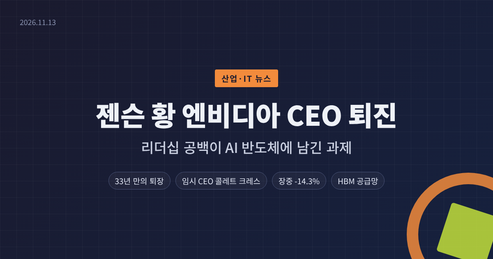
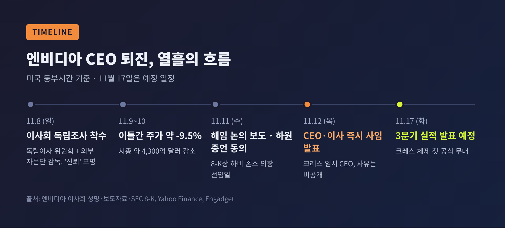
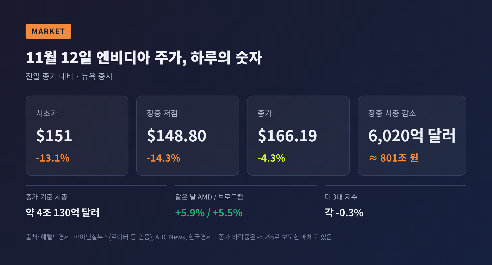
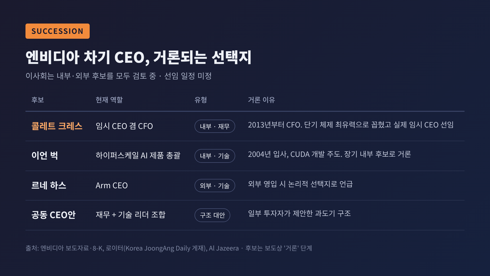
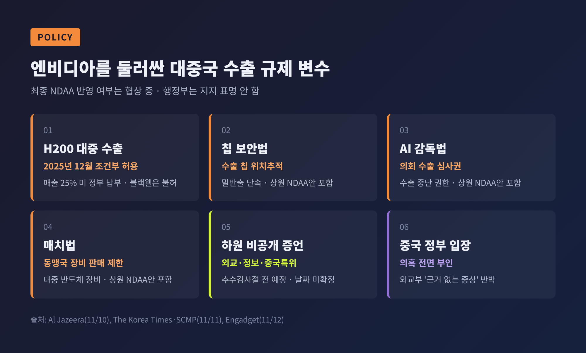
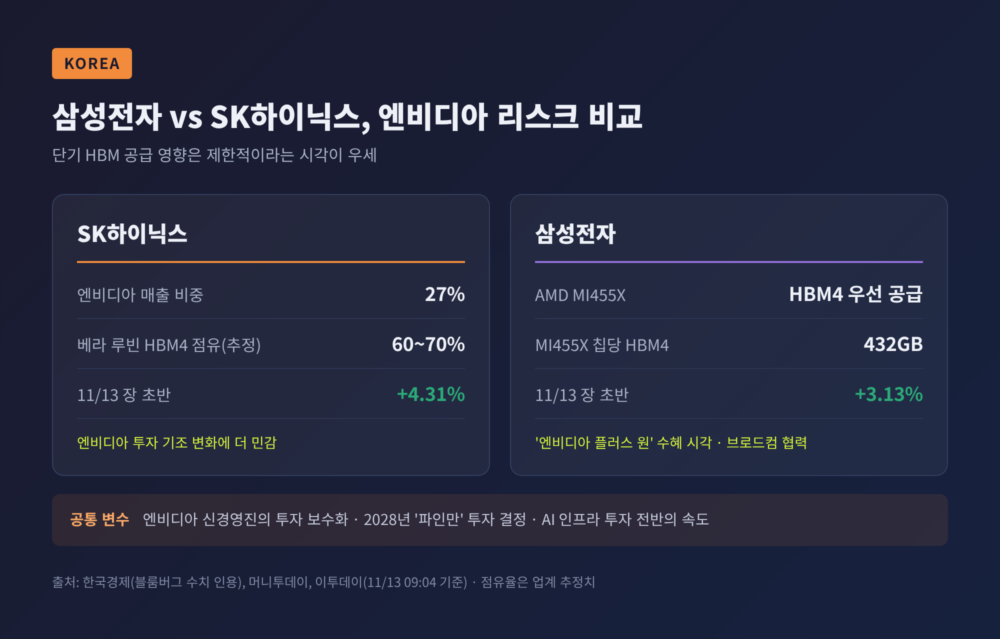

젠슨 황 엔비디아 CEO 퇴진, 리더십 공백이 AI 반도체에 남긴 과제

이번 글에서는 젠슨 황의 엔비디아 CEO 퇴진을 산업의 눈으로 정리해 보겠습니다. 누가 회사를 이끌게 되는지, 시장과 공급망은 어떻게 반응했는지, 한국 반도체에는 무엇이 걸려 있는지를 차례로 짚습니다.
3줄 요약
- 엔비디아는 11월 12일(미국시간) 공동창업자 젠슨 황이 CEO·사장·이사직에서 즉시 물러났다고 발표했습니다. 회사는 사유를 밝히지 않았습니다.
- 콜레트 크레스 CFO가 임시 CEO를 겸하고, 하비 존스가 회사 역사상 첫 이사회 의장을 맡았습니다.
- 주가는 장중 14.3%까지 빠졌다가 4.3% 하락으로 마감했습니다. 다음 고비는 11월 17일 3분기 실적 발표입니다.
■ 무슨 일이 있었나 — 회사가 공식적으로 밝힌 것
엔비디아는 11월 12일 보도자료와 미 증권거래위원회(SEC) 8-K 공시를 함께 냈습니다. 공시 문구는 짧습니다. 이사회가 젠슨 황의 사장·CEO·이사 사임을 "즉시 효력으로 수리했다"는 내용입니다.
1993년 회사를 함께 세운 이후 33년 만의 퇴장입니다.
공식 문서에 담긴 내용은 세 가지로 정리됩니다.
- 임시 CEO: 2013년부터 재무를 책임진 콜레트 크레스 수석부사장 겸 CFO가 맡습니다. 정식 후임이 정해질 때까지 CFO 직도 함께 수행합니다.
- 첫 이사회 의장: 1993년부터 이사로 재직한 하비 C. 존스가 선임됐습니다. 반도체 설계 소프트웨어 기업 시놉시스의 CEO·의장 출신입니다.
- 후임 선정: 이사회가 내부·외부 후보를 모두 놓고 정식 CEO를 찾고 있습니다. 일정은 공개하지 않았습니다.
존스 의장은 운영과 고객 약속, 제품 로드맵이 "차질 없이 이어질 것"이라고 강조했습니다. 크레스 임시 CEO는 황이 33년간 쌓은 토대 위에서 고객과 주주에 집중하겠다고 밝혔습니다.
눈여겨볼 대목은 무엇이 빠져 있는가입니다. 보도자료와 8-K 어디에도 사임 사유는 적혀 있지 않습니다. 회사와의 이견이 있었는지에 대한 언급도 없습니다.

■ 퇴진 배경 — 공식 발표와 보도의 경계
나흘 전 상황은 달랐습니다.
11월 8일 엔비디아 이사회는 성명을 냈습니다. 황이 "해외 정보기관 공작의 표적이 됐다"는 보도를 계기로 독립 조사를 시작한다는 내용이었습니다. 조사는 독립이사 위원회가 감독하고 외부 법률 자문단이 돕는 구조입니다. 이사회는 이때 "국가 안보나 회사 기밀이 침해됐다고 믿을 이유가 없다"고 했습니다. 황과 경영진에 대한 신뢰도 함께 표명했습니다.
같은 무렵 황은 사내 메시지로 개인적 처신 문제를 인정하고 가족과 직원들에게 사과했다고 미국 언론들이 전했습니다.
그 이후는 보도의 영역입니다. 뉴욕타임스·파이낸셜타임스 등은 미 정보당국이 중국 측 정보 활동에 연루됐다고 의심하는 인물과 황의 관계를 보도했습니다. 해당 인물은 엔비디아의 클라우드 파트너인 싱가포르 업체 메가스피드의 전 경영진으로 알려졌습니다. 사내 고위 임원과의 관계로 인한 이해충돌 논란도 함께 제기됐습니다.
다만 확인되지 않은 부분이 큽니다.
- 중국 외교부는 관련 의혹을 "완전히 근거 없는 중상"이라고 부인했습니다.
- 로이터는 정보당국의 판단을 독자적으로 검증하지 못했다고 밝혔습니다.
- 황이 고의로 정보를 넘겼거나 회사 기밀이 유출됐다는 증거는 공개된 바 없습니다.
정리하면 이렇습니다. 회사가 확인한 사실은 "사임·임시 체제·독립 조사"까지입니다. 퇴진의 직접적 이유는 보도로만 전해지고 있고, 조사 결과도 아직 나오지 않았습니다.
■ 시장은 어떻게 반응했나 — 장중 801조 원, 종가는 4.3%
11월 12일 뉴욕 증시에서 엔비디아는 13.1% 내린 151달러로 출발했습니다. 장중 저점은 148.80달러, 전일 대비 14.3% 하락이었습니다. 이 순간 시가총액은 약 6,020억 달러, 원화로 약 801조 원이 줄어든 3조 5,930억 달러였습니다. 잠시 마이크로소프트에 2위를 내주기도 했습니다.
하지만 저가 매수가 들어왔습니다. 로이터에 따르면 피델리티 개인투자자 플랫폼에서 매수 주문이 매도의 다섯 배였습니다. 종가는 4.3% 내린 166.19달러로, 시총은 약 4조 130억 달러를 지켰습니다.

숫자를 조금 넓게 보면 무게가 다릅니다.
- 의혹이 불거지기 전인 11월 6일 대비 약 11% 하락, 시총 약 4,940억 달러 감소
- 10월 6일 사상 최고 종가(239.24달러) 대비 약 30% 하락
- 11월 12일 하루에만 미국 금융사 8곳이 투자의견을 낮췄고, 한 주 동안 20곳이 목표주가를 내렸습니다
반면 경쟁사는 올랐습니다. 같은 날 AMD는 5.9%, 브로드컴은 5.5% 상승했습니다. 엔비디아에 쏠렸던 자금이 다른 AI 칩 기업으로 옮겨갈 수 있다는 기대가 반영된 셈입니다. 미국 3대 지수는 각각 0.3% 내리는 데 그쳤습니다.
예전엔 "엔비디아가 흔들리면 AI 전체가 흔들린다"는 공식이 통했습니다. 이번에는 엔비디아만 떨어지고 경쟁사는 오르는, 갈라진 반응이 나왔습니다.
■ 왜 중요한가 — '핵심인물 리스크'가 현실이 된 순간
엔비디아는 AI 가속기 시장의 80~90%를 차지하는 것으로 추정됩니다. 그 회사를 창업 이후 줄곧 한 사람이 이끌어 왔습니다. 별도의 이사회 의장도 이번에 처음 생겼을 만큼, 창업자 중심 구조가 뚜렷했습니다.
시장 분석가들의 반응도 이 지점에 모입니다. 플러드라인스 리서치의 애나 우는 황을 "업계의 록스타"라 부르며 대체하기 매우 어렵다고 평가했습니다. 반도체 분석기관 세미애널리시스는 황이 직접 조율해 온 칩 물량 배정을 후임 체제가 지킬 수 있느냐가 진짜 시험대라고 짚었습니다.
이사회의 대응 속도도 관전 대상입니다. 8일에는 신뢰를 표명했고, 나흘 뒤에는 사임을 수리했습니다. 의장직 신설과 독립 조사는 감독 기능을 보강하려는 조치로 읽힙니다. 그 효과는 조사 결과가 어떻게 공개되느냐에 달려 있습니다.
■ 후계 구도 — 재무형 임시 체제, 기술형 후보군
현재 체제는 '재무 전문가의 관리형 임시 경영'에 가깝습니다. 크레스는 텍사스인스트루먼트·마이크로소프트·시스코를 거쳐 2013년 엔비디아에 합류했습니다. 그가 재무를 맡는 동안 연매출은 41억 달러(2014 회계연도)에서 2,159억 달러(2026 회계연도)로 커졌습니다. 실적 발표마다 투자자들과 마주해 온 얼굴이라는 점이 강점으로 꼽힙니다.
로이터가 정리한 정식 후보군은 다음과 같습니다.

- 이언 벅: 2004년 입사, 엔비디아 AI 생태계의 뿌리인 CUDA 개발을 이끈 하이퍼스케일 AI 제품 총괄입니다. 장기적으로 가장 유력한 내부 기술 리더로 거론됩니다.
- 콜레트 크레스: 단기·임시 체제를 이끌 인물로 가장 유력하게 꼽혔고, 실제로 임시 CEO가 됐습니다.
- 르네 하스: Arm CEO로, 외부 영입 시 논리적인 선택지로 언급됩니다.
- 공동 CEO안: 재무 리더와 기술 리더를 짝짓는 구조도 일부 투자자가 제안했습니다.
이 밖에 AMD의 리사 수, 마이크론의 산제이 메로트라 등도 언론과 분석가 사이에서 이름이 오르내립니다. 트럼프 대통령은 SNS에서 팀 쿡 전 애플 CEO를 거론했지만, 본인의 의사가 확인된 바는 없습니다. 어디까지나 후보 '거론' 단계입니다.
■ 정책 변수 — 미 의회와 대중국 수출 규제
이번 사안은 경영 문제에 그치지 않고 워싱턴의 수출 통제 논쟁과 맞물려 있습니다.
황은 그동안 첨단 칩 수출 규제에 반대해 온 대표적 목소리였습니다. 트럼프 대통령은 2025년 12월 H200의 중국 판매를 허용했습니다. 매출의 25%를 미 정부에 내는 조건이었고, 상위 제품인 블랙웰은 허용하지 않았습니다. 중국 기업들의 H200 주문이 200만 개, 최대 540억 달러 규모라는 보도도 있으나, 주문일 뿐 판매가 확정된 것은 아닙니다.
의회는 압박 수위를 높이고 있습니다.
- 하원 외교위원회 브라이언 마스트 위원장은 황이 비공개 증언에 동의했다고 밝혔습니다. 정보위원회와 중국특위가 합류하며, 추수감사절 전 열릴 예정이라고 전해졌습니다. 정확한 날짜는 확인되지 않았습니다.
- 상원 국방수권법(NDAA)안에는 수출 칩 위치추적을 담은 '칩 보안법', 첨단 칩 수출에 의회 심사권을 주는 'AI 감독법', 동맹국의 대중 장비 판매를 제한하는 '매치법'이 모두 들어가 있습니다.
- 다만 최종안 반영 여부는 협상 중이고, 행정부는 아직 지지를 표명하지 않았습니다.
규제가 강화되면 엔비디아의 중국 매출 전망은 다시 불투명해집니다. 그동안 규제 완화를 설득해 온 창업자가 빠진 자리에서, 회사의 로비력도 시험받게 됩니다.

■ 한국 반도체에는 — 단기 '제한적', 중장기 '갈림길'
한국 증시의 첫 반응은 의외로 차분했습니다. 11월 13일 장 초반 삼성전자는 3.13% 오른 21만 4,500원, SK하이닉스는 4.31% 오른 130만 8,000원에 거래됐습니다. 오전 10시 40분 무렵에도 두 종목 모두 2%대 강세를 이어갔습니다.
단기 영향이 제한적이라는 판단이 우세합니다. 키움증권 한지영 연구원은 엔비디아의 차세대 '베라 루빈' 양산 일정과 주요 고객 공급계약이 대부분 정해져 있어, 1~2년 안에 큰 차질이 생길 가능성은 낮다고 봤습니다. HBM(고대역폭메모리) 물량 역시 고객사와 미리 계약되는 구조라 경영진 교체만으로 기존 주문이 빠르게 줄기는 어렵다는 게 업계 시각입니다.
그러나 두 회사의 처지는 조금 다릅니다.

- SK하이닉스: 블룸버그 집계로 매출의 27%가 엔비디아에서 나옵니다. 베라 루빈용 HBM4 물량의 60~70%를 맡은 것으로 추정돼, 엔비디아의 투자 기조 변화에 더 민감합니다.
- 삼성전자: AMD의 차세대 가속기 MI455X에 HBM4를 우선 공급합니다. 이 칩은 HBM4를 432GB 담아 베라 루빈(288GB)보다 50% 많습니다. 브로드컴과도 공급 확대에 합의해, '엔비디아 플러스 원' 수혜주로 보는 시각이 있습니다.
걱정할 대목도 있습니다. 메리츠증권 황수욱 연구원은 새 경영진이 투자와 신용 보강에 보수적으로 돌아서면, 네오클라우드 확장이 느려지고 신규 HBM 주문이 밀릴 수 있다고 지적했습니다. 2028년 예정인 차세대 GPU '파인만'에 대한 투자 결정도 추가 HBM 수요를 좌우할 변수입니다.
AI 수요가 엔비디아 밖으로 분산된다면 고객이 다양한 쪽이 유리합니다. 다만 AI 인프라 투자 자체가 식는다면, 고객 다변화만으로 충격을 다 상쇄하기는 어렵습니다.
■ 앞으로의 관전 포인트
당분간 주목할 일정은 다음과 같습니다.
- 11월 17일(현지시간) 3분기 실적 발표 — 한국시간 18일 오전 6시 20분입니다. 크레스 체제의 첫 공식 무대이자, 가이던스와 공급 계획이 그대로 유지되는지 확인할 자리입니다.
- 하원 비공개 증언 — 추수감사절 전으로 알려졌습니다. 수출 정책과 관련된 질의가 나올지 주목됩니다.
- 독립 조사 결과 — 공개 범위와 시점이 이사회 신뢰도를 가를 것입니다.
- 정식 CEO 선임 — 기술형 내부 인사인지 외부 영입인지에 따라 로드맵과 물량 배정 방식이 달라질 수 있습니다.
- NDAA 최종안 — 수출 통제 조항이 들어가면 엔비디아뿐 아니라 HBM 공급망 전체의 중국 변수가 커집니다.
끝으로 한 가지만 덧붙이겠습니다.
엔비디아의 제품과 계약은 하루아침에 바뀌지 않습니다. 흔들리는 것은 그 계약들을 한데 묶어 온 '결정하는 사람'의 자리입니다.
한 사람의 공백이 한 산업의 질문이 됐다 — 이번 사안이 남긴 가장 큰 의미입니다. 그 질문에 엔비디아가 어떤 답을 내놓을지는, 다음 주 실적 발표에서 첫 단서를 볼 수 있을 것입니다.
이 글은 정보 제공 목적이며 투자 권유가 아닙니다. 퇴진 사유와 관련된 내용 가운데 회사가 공식 확인하지 않은 부분은 언론 보도에 따른 것이며, 사실관계는 조사 결과에 따라 달라질 수 있습니다.
출처
- NVIDIA Newsroom, "NVIDIA Announces CEO Transition" (2026-11-12) — https://nvidianews.nvidia.com/news/nvidia-announces-ceo-transition
- NVIDIA IR, "Statement from NVIDIA Board of Directors" (2026-11-08) — https://investor.nvidia.com/news/press-release-details/2026/Statement-from-NVIDIA-Board-of-Directors/default.aspx
- NVIDIA SEC Form 8-K 요약, StockTitan (2026-11-12) — https://www.stocktitan.net/sec-filings/NVDA/8-k-nvidia-corp-reports-material-event-7ee30e4de444.html
- Reuters(Korea JoongAng Daily 게재), 차기 CEO 후보 분석 (2026-11-12) — https://www.koreajoongangdaily.com/world/with-huangs-leadership-on-the-line-cfo-and-chief-engineer-emerge-at-favored-candidates/12969561
- Al Jazeera, "Why did Nvidia CEO Jensen Huang resign, and who is Colette Kress?" (2026-11-12) — https://www.aljazeera.com/news/2026/11/12/why-did-nvidia-ceo-jensen-huang-resign-and-who-is-colette-kress
- Al Jazeera, "Nvidia spy scandal fuels debate over chip exports to China" (2026-11-10) — https://www.aljazeera.com/economy/2026/11/10/nvidia-spy-scandal-fuels-debate-over-chip-exports-to-china
- Fox Business, "Nvidia CEO Jensen Huang steps down" (2026-11-12) — https://www.foxbusiness.com/business-leaders/nvidia-ceo-jensen-huang-resigns-amid-investigation-relationship-alleged-chinese-spy
- Tom's Hardware (2026-11-12) — https://www.tomshardware.com/tech-industry/nvidia-confirms-jensen-huang-has-resigned-as-ceo-colette-kress-executive-vice-president-and-chief-financial-officer-appointed-interim-ceo
- ABC News, "Nvidia closes lower after CEO Jensen Huang resigns" (2026-11-12) — https://abcnews.com/Business/nvidia-stock-sinks-after-ceo-jensen-huang-resigns/story?id=138076153
- CBS News (2026-11-12) — https://www.cbsnews.com/news/nvidia-stock-nvda-ceo-jensen-huang/
- Yahoo Finance, "Nvidia Sheds $430B in Two Days…" (2026-11-11) — https://finance.yahoo.com/markets/stocks/articles/nvidia-sheds-430b-two-days-121546673.html
- Engadget, 하원 증언 예정 보도 (2026-11-12) — https://www.engadget.com/2315091/ex-nvidia-ceo-jensen-huang-is-set-to-testify-before-congress-this-month/
- TechCrunch (2026-11-11) — https://techcrunch.com/2026/11/11/congress-to-call-jensen-huang-in-to-answer-for-alleged-chinese-spy-affair/
- The Korea Times(SCMP), NDAA 수출통제 법안 (2026-11-11) — https://www.koreatimes.co.kr/world/20261111/us-lawmakers-push-for-tougher-china-export-controls-in-defense-bill-amid-nvidia-scrutiny
- 헤럴드경제, "젠슨 황 퇴진 엔비디아 시총도 흔들…장중 801조원 증발" (2026-11-13) — https://biz.heraldcorp.com/article/10935704
- 파이낸셜뉴스 (2026-11-13) — https://www.fnnews.com/news/202611130855122814
- 이투데이, 삼성전자·SK하이닉스 특징주 (2026-11-13) — https://www.etoday.co.kr/news/view/2647726
- 한국경제, "젠슨 황 떠난 엔비디아의 빈틈, 삼전닉스엔 뜻밖의 호재?" (2026-11-13) — https://www.hankyung.com/article/202611134784i
- 머니투데이, "'깐부' 삼전닉스는 문제없나…" (2026-11-13) — https://www.mt.co.kr/index.php/industry/2026/11/13/2026111310455463404